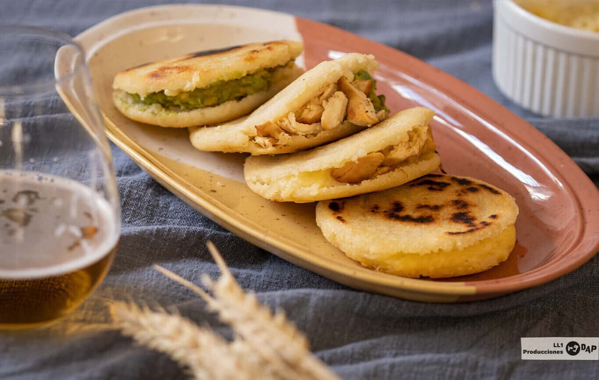

Arepa Casera

Ingredientes
Para 6 unidades
-
Harina de maíz precocida blanca 180 g
-
Agua fría 300 ml
-
Sal cucharadita de postre 1
-
Queso rallado para el relleno 90 g
-
Pechuga de pollo cocida para el relleno 1
-
Aguacate pequeño para el relleno
Preparación
- Lo primero que debemos hacer es la masa, así que mezclaremos la harina de maíz, el agua y la sal y haremos una bola cuando esté bien homogénea, dejando reposar en nevera 15 minutos envuelta en film transparente.
- Pasado ese tiempo hacemos seis bolas iguales de tamaño, las trabajamos con las manos y las aplanamos delicadamente.
- Una vez listas, las cocinamos en una sartén antiadherente, con aceite de oliva unos seis minutos por cada lado a una temperatura medio-baja.
- Cuando estén listas la arepas, hacemos un corte en uno de los lados y lo rellenamos al gusto con la mezcla de ingredientes: queso, pollo y aguacate machacado con un tenedor.